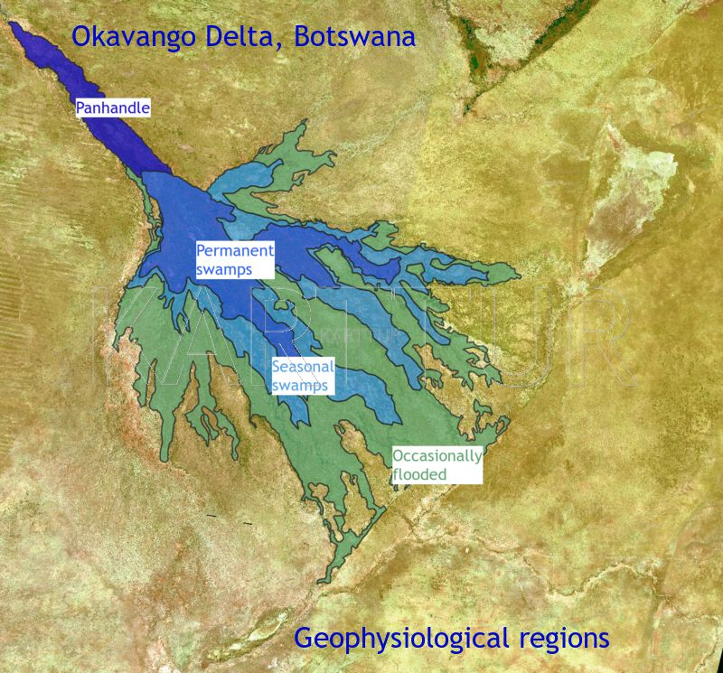

The Okavango Swamps in Botswana (figure 1) are composed of a mosaic of islands and wetlands with a pronounced seasonal inundation cycle. The Panhandle entry valley (see figure 1) is mostly permanently inundated, and so is the proximal region of the swamps as the water leaves the Panhandle and spreads out over the alluvial fan (usually referred to as a "delta" but that is strictly speaking not correct). Further downstream the permanent wetlands give way to floodplains and then to grasslands with regular or occasional (during wetter years only) flooding. Salt pans occur both in the lower reaches of the alluvial fan and on islands. Island rims are usually elevated with riparian forests. Outside the region that is flooded the Kalahari desert with its sparse woodlands take over.

Figure 1. The Okavango swamps, Botswana.
I spent my Post Doc time (1999-2001) at University of the Witwatersrand (Johannesburg, South Africa) studying the Okavango swamps.
This blog contains popular summaries of my studies and all the spatial data used for input as well as results.
Okavango articles and data
{% for post in site.categories.okavango reversed %}